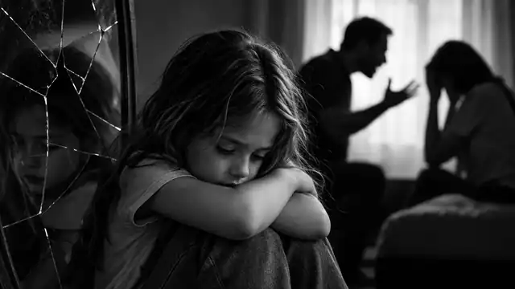
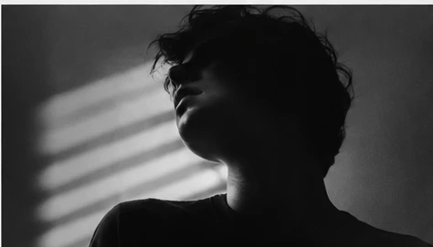

A dificuldade de personalização em filhos de pais narcisistas
Uma reflexão sobre individuação, autonomia emocional, saúde mental e dinâmicas de violência intrafamiliar.
LER PUBLICAÇÃO ↗Ideias, investigações e perguntas sobre diferentes áreas do conhecimento, escritas para aproximar a pesquisa do cotidiano.

Uma reflexão sobre individuação, autonomia emocional, saúde mental e dinâmicas de violência intrafamiliar.
LER PUBLICAÇÃO ↗
Uma análise introdutória sobre gênero, cultura, relações de poder e as respostas sociais às denúncias de violência sexual.
LER PUBLICAÇÃO ↗Esta categoria ainda não tem um texto publicado. O primeiro ensaio já está disponível nas seções Sociedade e Direitos humanos.
Ver todos os artigos ↗